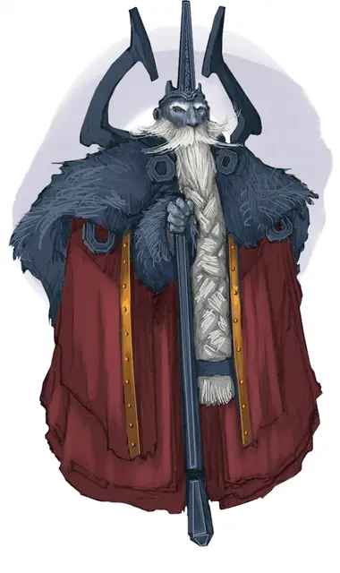

Глубинный Король Хоргар Стилшэдоу V
Deepking Horgar Steelshadow V
Средний Гуманоид (Дварф), законно-злой, именной НИП

Класс Доспеха 20 (латы дварфов)
Хиты 52 (8к8 + 16)
Скорость 30 футов
| мод | спас | ||
|---|---|---|---|
| СИЛ | 19 | +4 | +4 |
| ЛОВ | 11 | +0 | +0 |
| ТЕЛ | 14 | +2 | +4 |
| мод | спас | ||
|---|---|---|---|
| ИНТ | 11 | +0 | +0 |
| МДР | 11 | +0 | +2 |
| ХАР | 15 | +2 | +2 |
Сопротивление урону яд
Чувства пассивное Восприятие 10
Языки Великаний, Дварфийский, Драконий
Опасность 3 (700 опыта)
Бонус мастерства +2
Особенности
Особое снаряжение. Хоргар носит рукавицы силы огра [gauntlets of ogre power], которые приравнивают значение Силы к 19 (+4), облачён в латы дварфов [dwarven plate], а так же вооружён боевым молотом +2 [warhammer +2].
Дуэргарская устойчивость. Хоргар совершает с преимуществом спасброски от яда, заклинаний и иллюзий, а также спасброски для сопротивления очарованию и параличу.
Храбрый. Хоргар совершает с преимуществом спасброски от испуга.
Чувствительность к солнечному свету. Находясь на солнечном свету, Хоргар совершает с помехой броски атаки, а также проверки Мудрости (Восприятие), полагающиеся на зрение.
Действия
Мультиатака. Хоргар совершает две рукопашные атаки.
Боевой молот +2. Рукопашная атака оружием: +8 к попаданию, досягаемость 5 футов, одна цель. Попадание: 10 (1к8+6) дробящего урона или 11 (1к10+6) дробящего урона, если использовался двумя руками. Пока Хоргар увеличен, урон увеличивается до 15 (2к8+6) или 17 (2к10+6) дробящего урона, соответственно.
Тяжёлый арбалет. Дальнобойная атака оружием: +2 к попаданию, дистанция 100/400 футов, одна цель. Попадание: Колющий урон 5 (1к10).
Лидерство (перезаряжается после короткого или продолжительного отдыха). В течение 1 минуты Хоргар может произносить особую команду или предостережение каждый раз, когда невраждебное существо, видимое им в пределах 30 футов, совершает бросок атаки или спасбросок. Это существо может добавить к4 к броску, если может слышать Хоргара и понимает его. Существо может получать преимущество только от одного Лидерства одновременно. Этот эффект оканчивается, если Хоргар становится недееспособным.
Увеличение (перезаряжается после короткого или продолжительного отдыха). На 1 минуту Хоргар магическим образом увеличивается в размере вместе со всем, что несёт и носит. Пока Хоргар увеличен, он является Большого размера, удваивает кости урона от атак оружием, основанных на Силе (уже учтено в атаке) и совершает с преимуществом проверки и спасброски Силы. Если Хоргару не хватает места, чтобы стать Большим, он приобретает максимальный размер, допустимый имеющимся пространством.
Невидимость (перезаряжается после короткого или продолжительного отдыха). Хоргар магическим образом становится невидимым в течение 1 часа или пока он не атакует, наложит заклинание, использует своё «Увеличение» или потеряет концентрацию (как если бы он концентрировался на заклинании). Любое снаряжение, одетое или носимое Хоргаром, становится невидимым вместе с ним.
Реакции
Парирование. Хоргар добавляет 2 к КД против одной рукопашной атаки, которая должна попасть по нему. Для этого Хоргар должен видеть атакующего и должен использовать рукопашное оружие.